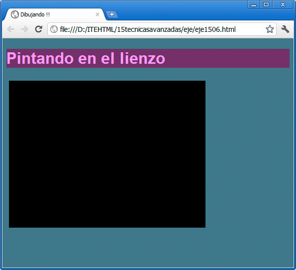

HTML5 incorpora un interesante recurso denominado <canvas>. Esta etiqueta genera un espacio en la página web en el que se puede dibujar, empleando instrucciones creadas con JavaScript.
El lienzo (canvas en inglés) se define así:
<canvas id="canvas01" width="400" height="300"></canvas>
Con el sistema habitual de dimensiones especificaremos su tamaño. Al probar esa página web, veremos una gran mancha transparente, es decir, nada de nada.
Aquí cobra importancia el identificador, porque es la parte que nos va a permitir hacer referencia a ese <canvas> concreto desde JavaScript, de la siguiente manera:
var milienzo = documentgetElementByID("canvas01");
Esta instrucción en JavaScript averigua qué elemento de todos los presentes en el DOM (el modelo de objetos del documento) se corresponde con el identificador canvas01 y guarda la referencia en la variable milienzo. Éstos son detalles de programación en JavaScript que se repiten siempre de la misma manera y que nos permitirán operar con ese valor, con milienzo. Ahora vendría una línea como ésta:
var micontexto = milienzo.getContext("2d");
que de nuevo es una línea que se repite siempre igual, cada vez que queramos manipular un lienzo. Define un espacio de dibujo en dos dimensiones, en previsión de que en un futuro (ahora no) podamos realizar dibujos en 3D dentro del navegador.
A dibujar
Tenemos por tanto una pequeña función que va a comenzar siempre con las dos líneas anteriores; así:
function dibujar( ) {
var milienzo = document.getElementById("canvas01");
var micontexto = milienzo.getContext("2d");
}
A la que sólo falta que le incorporemos algo visual. Tenemos varias funciones a nuestra disposición. Por ejemplo, el método fillRect permite dibujar un rectángulo que va de una posición inicial (x1,y1) seguido de un ancho y un alto. Teniendo en cuenta que la esquina superior izquierda del lienzo es la posición 0,0, es fácil deducir que nuestro lienzo concreto acaba en la posición 400,300. Probaremos a realizar un rectángulo que vaya casi rodeando el lienzo:
micontexto.fillRect(5,5,390,290);
Nota
Ojo con las mayúsculas. En JavaScript no es lo mismo escribir fillrect que fillRect. La primera no funcionará. Sí. Así de difícil les gusta hacer las cosas a los creadores de los lenguajes de programación.
El resultado del ejemplo anterior se muestra en la figura:

Para llegar a ese punto, debemos poner cada cosa en su sitio. Veamos el código de la página completo:
<!DOCTYPE html>
<html>
<head>
<meta content="text/html; charset=UTF-8" http-equiv="Content-Type">
<title>Dibujando !!</title>
<script type="text/JavaScript">function dibujar() {
var milienzo = document.getElementById("canvas01");
var micontexto = milienzo.getContext("2d");
micontexto.fillRect(5,5,390,290);
}
</script>
</head>
<body onload="JavaScript:dibujar();"><h1>Pintando en el lienzo</h1>
<canvas id="canvas01" width="400" height="300"></canvas>
</body>
</html>
Sólo hemos retirado del ejemplo algunos estilos; lo demás está todo ahí. Nos interesa prestar atención a dos partes:
- Por un lado está la función completa, llamada dibujar, que hemos definido en la cabecera de la página con el método estándar, usando la etiqueta <script>
- Por otro lado, para que la función se ejecute al cargar la página, hemos establecido una llamada en la etiqueta <body>, para cuando se produzca el evento onload, al cargar.
En la función ya sólo necesitaremos ir añadiendo nuevas líneas debajo de fillRect, para modificar el dibujo y realizar más operaciones.
Más opciones de dibujo
- fillStyle: establece el formato del relleno de la figura, indicado como un color, un diseño o incluso un degradado de color.
- strokeRect (x,y,ancho,alto) dibuja un rectángulo vacío; sólo su contorno.
- strokeStyle: establece el formato de línea del elemento anterior.
- clearRect (x,y,ancho, alto): borra los píxeles de las dimensiones indicadas.
El dibujo, por tanto, es muy diferente si cambiamos el fill por un stroke; probamos esta secuencia:
function dibujar() {
var milienzo = document.getElementById("canvas01");
var micontexto = milienzo.getContext("2d");
micontexto.strokeStyle="#3333ff";
micontexto.strokeRect(5,5,390,290);
}
Tanto fillStyle como strokeStyle son lo que se conoce como propiedades, es decir, que internamente no son funciones y por tanto su valor no se le indica mediante paréntesis, sino que se le asigna un valor mediante el signo igual. Todo esto se debe a que JavaScript es un lenguaje orientado a objetos; micontexto es un objeto que tiene algunas funciones (llamadas métodos) que realizan operaciones y también propiedades, es decir, características que podemos modificar asignándole algún valor.
Nota
La propiedad de relleno se debe establecer antes de realizar el dibujo, para que así el dibujo aparezca con el color indicado. Así podemos definir distintos objetos con colores variados.
Actividad 4
Probaremos a realizar mezclas con varios rectángulos rellenos y sin rellenar con diferentes colores. Podemos añadir tantas líneas como sea necesario a la función.
Como se puede observar, se abren un montón de posibilidades. El límite lo impondrá nuestro conocimiento de JavaScript. Cuanto más profundicemos en este lenguaje, más se abrirá nuestro horizonte. Observemos este otro pequeño código:
function dibujar() {
var milienzo = document.getElementById("canvas01");
var micontexto = milienzo.getContext("2d");
var i=0;
var x=5;
var y=5;
var ancho = 390;
var alto = 290;
for (i=0;i<=25;i++) {
micontexto.strokeStyle="#"+Math.floor(Math.random()*16777215).toString(16);}
micontexto.strokeRect(x,y,ancho,alto);
x=x+5;
y=y+5;
ancho=ancho-10;
alto=alto-10;
}
</script>
Es una variación de nuestra función; podemos copiarla y pegarla. En ella se emplean una serie de técnicas imprescindibles:
- Usamos variables para almacenar valores que van a cambiar a lo largo de la función, como x, y, etc. Luego variamos su valor con lineas como x=x+5;
- Usamos una estructura de repetición for, que hará que el bloque de su interior se repita tantas veces como indiquemos; en este caso 25 veces.
- Empleamos el objeto Math, que nos aporta un montón de funciones matemáticas, como floor para obtener un número entero o random, para un número aleatorio. Con todo ello empleamos una pequeña fórmula para generar colores aleatorios.
El resultado sería éste:
Actividad 5
Realizaremos algunas modificaciones a la función anterior, cambiando números y variando valores. Observaremos el resultado de cada cambio, intentando sacar conclusiones. Sobre todo no nos desesperaremos si algo sale mal. Podemos comenzar de nuevo copiando y pegando la función.
Todavía más opciones de dibujo
El trabajo con la etiqueta <canvas> es muy extenso, pero no podemos dejar de citar algunas de las propiedades y métodos que podemos emplear mediante JavaScript:
- moveTo (x,y): imaginemos que el canvas tiene una especie de puntero interior. Con moveto lo desplazaremos a una posición determinada. Es como desplazar un lapiz hasta un punto.
- lineTo (x,y): teniendo ese lapiz en una posición concreta, con lineTo lo desplazaremos a otro punto, pero dejando dibujando una línea por el camino.
Estos dos métodos trazan una figura invisible. Hasta que no definamos un color de trazo con strokeStyle y lo apliquemos no se verá nada. Para aplicarlo recurriremos al siguiente método:
- stroke(): traza la figura diseñada con las herramientas moveTo y lineTo.
Texto en el canvas
También podemos añadir texto a un <canvas>. Emplearemos las siguientes funciones:
- font: usando las reglas CSS que ya conocemos definiremos la apariencia del texto.
- textAlign y textBaseline se emplean para definir alineación (izquierda, derecha, etc) y punto de inicio del texto. Probablemente no empleemos estas propiedades en los primeros compases de trabajo con texto.
- fillText (texto, x, y): como parámetros indicaremos el mensaje a mostrar y la posición inicial del texto.
La figura siguiente muestra un ejemplo sencillo.
Se obtiene añadiendo estas tres líneas al ejemplo anterior:
micontexto.textAlign="center";
micontexto.font="20px arial";
micontexto.fillText("Cuadrados",200,155);
Aún nos quedamos más cosas en el tintero, que no trataremos para no alargarnos demasiado. Con un <canvas> podemos realizar círculos (arc), degradados de color (createLinearGradient) e insertar imágenes en su interior (drawImage).
Pregunta de Elección Múltiple
|
function dibujar( ) { var milienzo = document.getElementById("canvas01"); var micontexto = milienzo.getContext("2d"); } | |
|
var milienzo = document.getElementById("canvas01"); var micontexto = milienzo.getContext("2d"); | |
|
Function dibujar.
|
Actividad 6
Intentaremos realizar una imagen con las diferentes herramientas aprendidas. Es muy importante prestar mucha atención a cómo escribimos las partes de JavaScript. El más mínimo error hará que deje de funcionar el script completamente.